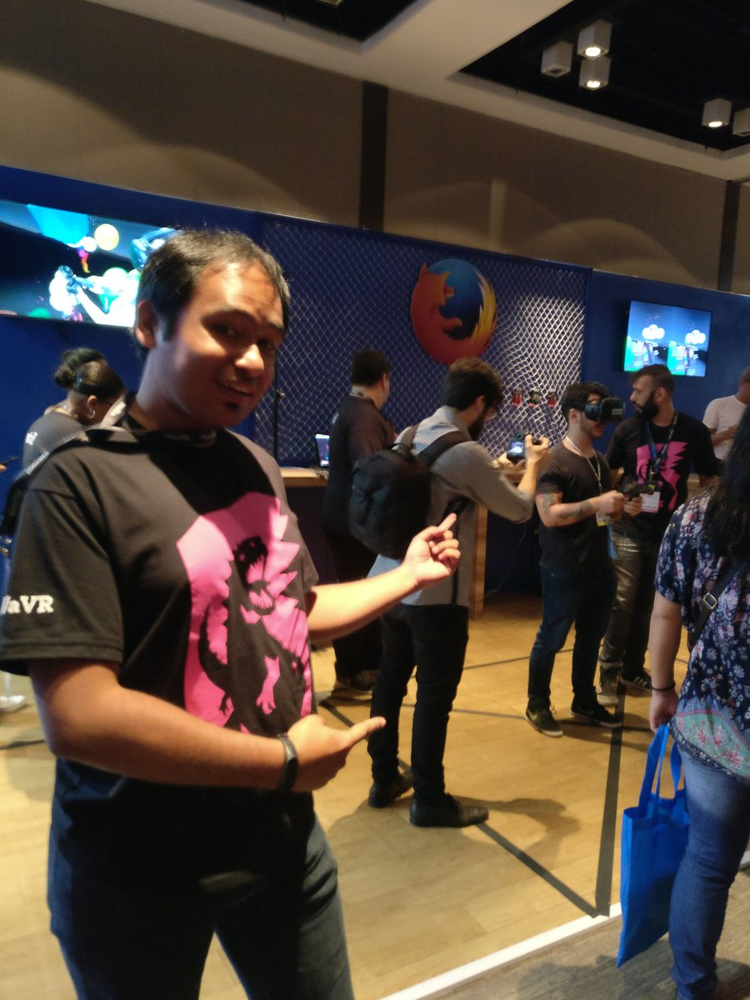

http://bit.ly/2w6Gucv
## Virtual Reality in the Web
VR is a new media.
It is about presence:
the feeling of being there
For WebVR to take off, we need **technology** and **content**; **authors**
and **distribution**.
Content has not to be realistic but it should provide **meaningful, presence-focused interactions**.
The Web is open, frictionless and reach millions of individuals around the world. WebVR experiences are always **one link away**.
The Web forces us to think of a global and diverse community of users with a variety of different devices.
[WebVR](https://github.com/w3c/webvr) is a new browser API for accessing VR displays and controllers.
The Web is not for programmers only.
Web technologies **welcome every kind of author**.
HTML and CSS are **friendly**, **accessible** and **powerful** languages.
They do great converting this:

Into this:

But HTML and CSS were not designed to deal with 3D scenes and body-based interactions like...

Soon, you will need JavaScript to create and manipulate 3D scenes, which means using [WebGL](https://developer.mozilla.org/en-US/docs/Web/API/WebGL_API), [WebVR](https://developer.mozilla.org/en-US/docs/Web/API/WebVR_API), [Web Audio](https://developer.mozilla.org/en-US/docs/Web/API/Web_Audio_API), [Gamepad](https://developer.mozilla.org/en-US/docs/Web/API/Gamepad_API/Using_the_Gamepad_API) and other powerful but **complex** browser APIs.
The boilerplate for a simple VR gets messy fast:
Making really hard for authors to start experimenting with VR.
## A-Frame
A framework for **building 3D, VR & AR experiences**.
It drastically reduces the boilerplate to:
Entering VR mode is as simple as clicking

A-Frame uses [Custom Elements](http://jonrimmer.github.io/are-we-componentized-yet/)
to extend the HTML vocabulary enabling the use of new **tags for
scene management** such as `a-scene`, `a-box` or `a-camera`.
A-Frame also takes advantage and **leverages HTML**:
It uses HTML syntax to expose a **component-based architecture**.
```html
<a-entity component
another-component="value"
yet-another-component="property: val; anotherProperty: val">
</a-entity>
```

A-Frame uses [three.js](https://threejs.org/) to render the scene. It exposes all the power of three.js in a **friendly, declarative fashion**.
## Showcase

## The Scene Inspector
[The inspector](https://github.com/aframevr/aframe-inspector) allows the developer to look into the whole scene, manipulate its elements and even export the resulting HTML.
Open the inspector pressing ctrl + alt + i.
Go standalone.
## Resources & Community
[@aframevr](https://twitter.com/aframevr)
Follow us on Twitter!
https://github.com/aframevr/aframe
And get involved in our GitHub community!
[A-Frame schools](https://aframe.io/aframe-school/#/)
An interactive tutorial covering tons of aspects.
[A-Frame Blog](https://aframe.io/blog/)
News and hot topics regarding A-Frame.
Participate and [suggest new content](https://github.com/aframevr/aframe/issues/2957)!
[A-Frame registry](https://aframe.io/aframe-registry/)
Exntend your capabilities by using 3rd party components.
[A-Frame slack](https://aframevr-slack.herokuapp.com/)
Join live discussions regarding A-Frame and WebVR.
Check the [slide deck](http://bit.ly/2w6Gucv)
And its [codepens](http://codepen.io/collection/XMjmvm/) also.
## Questions?